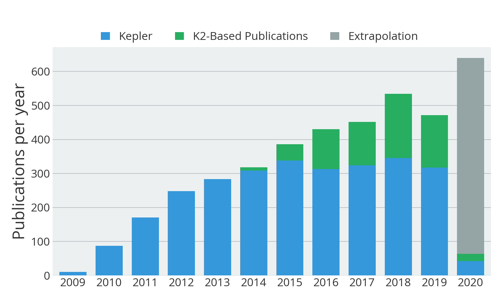

Summary
The Science Center curates a database of scientific publications pertaining to Kepler and K2. The list presently contains a total of 1455 publications, of which 1317 are peer-reviewed. Here we present a series of statistics derived from the database.
Last update: 08 Aug 2015.
Breakdown by mission & year
The graph below shows the number of publications as a function of year and mission. The publication count for Kepler is 1405, while that of K2 -- which started only in 2014 -- is 50.

View all Kepler publications » View all K2 publications » View all publications »
Breakdown by subject
Both Kepler and K2 data have been used for scientific applications that reach far beyond exoplanet research. A total of 703 works relate to exoplanets (48%), while 752 pertain to other areas of astrophysics (52%).

View all exoplanet publications » View all astrophysics publications »
Most-cited publications
Kepler/K2 publications have cumulatively been cited 34071 times so far. The list of authors and co-authors contains 2547 unique surnames,
The list below shows the top 10 most-cited publications, based on the information obtained from the ADS API.
-
KEPLER PLANET-DETECTION MISSION: INTRODUCTION AND FIRST RESULTS
Borucki, William J., Koch, David, Basri, Gibor, et al.
2010Sci...327..977B 766 citations -
CHARACTERISTICS OF PLANETARY CANDIDATES OBSERVED BY KEPLER. II. ANALYSIS OF THE FIRST FOUR MONTHS OF DATA
Borucki, William J., Koch, David G., Basri, Gibor, et al.
2011ApJ...736...19B 522 citations -
PLANETARY CANDIDATES OBSERVED BY KEPLER. III. ANALYSIS OF THE FIRST 16 MONTHS OF DATA
Batalha, Natalie M., Rowe, Jason F., Bryson, Stephen T., et al.
2013ApJS..204...24B 492 citations -
KEPLER MISSION DESIGN, REALIZED PHOTOMETRIC PERFORMANCE, AND EARLY SCIENCE
Koch, David G., Borucki, William J., Basri, Gibor, et al.
2010ApJ...713L..79K 420 citations -
KEPLER INPUT CATALOG: PHOTOMETRIC CALIBRATION AND STELLAR CLASSIFICATION
Brown, Timothy M., Latham, David W., Everett, Mark E., et al.
2011AJ....142..112B 352 citations -
PLANET OCCURRENCE WITHIN 0.25 AU OF SOLAR-TYPE STARS FROM KEPLER
Howard, Andrew W., Marcy, Geoffrey W., Bryson, Stephen T., et al.
2012ApJS..201...15H 334 citations -
A CLOSELY PACKED SYSTEM OF LOW-MASS, LOW-DENSITY PLANETS TRANSITING KEPLER-11
Lissauer, Jack J., Fabrycky, Daniel C., Ford, Eric B., et al.
2011Natur.470...53L 315 citations -
KEPLER'S FIRST ROCKY PLANET: KEPLER-10B
Batalha, Natalie M., Borucki, William J., Bryson, Stephen T., et al.
2011ApJ...729...27B 266 citations -
KEPLER-16: A TRANSITING CIRCUMBINARY PLANET
Doyle, Laurance R., Carter, Joshua A., Fabrycky, Daniel C., et al.
2011Sci...333.1602D 255 citations -
GRAVITY AND LIMB-DARKENING COEFFICIENTS FOR THE KEPLER, COROT, SPITZER, UVBY, UBVRIJHK, AND SLOAN PHOTOMETRIC SYSTEMS
Claret, A., Bloemen, S.
2011A&A...529A..75C 247 citations
Most-read publications
The read count shown below is obtained from the ADS API and indicates the number of times the article has been downloaded within the last 90 days.
-
MOST 1.6 EARTH-RADIUS PLANETS ARE NOT ROCKY
Rogers, Leslie A.
2015ApJ...801...41R 1905 reads -
A NEARBY M STAR WITH THREE TRANSITING SUPER-EARTHS DISCOVERED BY K2
Crossfield, Ian J. M., Petigura, Erik, Schlieder, Joshua E., et al.
2015ApJ...804...10C 1522 reads -
DISCOVERY AND VALIDATION OF KEPLER-452B: A 1.6 R⨁ SUPER EARTH EXOPLANET IN THE HABITABLE ZONE OF A G2 STAR
Jenkins, Jon M., Twicken, Joseph D., Batalha, Natalie M., et al.
2015AJ....150...56J 1400 reads -
PLANET HUNTERS: A TRANSITING CIRCUMBINARY PLANET IN A QUADRUPLE STAR SYSTEM
Schwamb, Megan E., Orosz, Jerome A., Carter, Joshua A., et al.
2013ApJ...768..127S 1079 reads -
WASP-47: A HOT JUPITER SYSTEM WITH TWO ADDITIONAL PLANETS DISCOVERED BY K2
Becker, Juliette C., Vanderburg, Andrew, Adams, Fred C., et al.
2015arXiv150802411B 850 reads -
TERRESTRIAL PLANET OCCURRENCE RATES FOR THE KEPLER GK DWARF SAMPLE
Burke, Christopher J., Christiansen, Jessie L., Mullally, F., et al.
2015ApJ...809....8B 799 reads -
KEPLER 453 B—THE 10TH KEPLER TRANSITING CIRCUMBINARY PLANET
Welsh, William F., Orosz, Jerome A., Short, Donald R., et al.
2015ApJ...809...26W 739 reads -
TWO TRANSITING EARTH-SIZE PLANETS NEAR RESONANCE ORBITING A NEARBY COOL STAR
Petigura, Erik A., Schlieder, Joshua E., Crossfield, Ian J. M., et al.
2015arXiv150708256P 680 reads -
THE TRANSITING EXOPLANET SURVEY SATELLITE: SIMULATIONS OF PLANET DETECTIONS AND ASTROPHYSICAL FALSE POSITIVES
Sullivan, Peter W., Winn, Joshua N., Berta-Thompson, Zachory K., et al.
2015ApJ...809...77S 647 reads -
AN ANCIENT EXTRASOLAR SYSTEM WITH FIVE SUB-EARTH-SIZE PLANETS
Campante, T. L., Barclay, T., Swift, J. J., et al.
2015ApJ...799..170C 632 reads